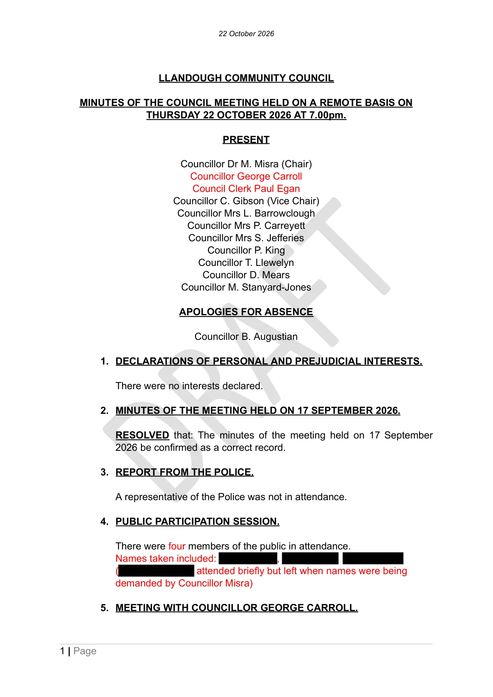

GHF-E106-R116-A1 draft minutes
Llandough Community Council: draft minutes of the meeting held on 22 October 2026

Open the public copy (PDF, 8 pages, names of members of the public blacked out)
Artifact description
Minutes of the Llandough Community Council meeting held on a remote basis on Thursday 22 October 2026 at 7.00pm, as circulated in draft. Each page carries a DRAFT watermark. Page 8 leaves the Chair's signature blank, dated 18 November 2026.
| Catalogue ID | GHF-E106-R116-A1 |
|---|---|
| Date of meeting | 22 October 2026, 7.00pm (remote) |
| Issuer | Llandough Community Council |
| Status | DRAFT minutes as circulated |
| Source | Supplied by the family, 27 October 2026 |
| Pages | 8 |
| Document title (file) | 213974-Council_Minutes_22_October_2026 |
| Public copy | ghf-e106-r116-a1-llandough-cc-draft-minutes-2026-10-22-redacted.pdf (names of members of the public, one resident's initials and two planning-application house addresses blacked out; the text under each box is removed, not hidden). Councillors and the Clerk acting in office are shown as written. |
| State | Read |
Relevant items, dated 22 October 2026
Short verbatim extracts from the draft. Page numbers are the document's own. Withheld names are shown as [name withheld].
Item 4, Public participation session (p. 1)
There were four members of the public in attendance.
(p. 1)Names taken included: [names withheld] ([name withheld] attended briefly but left when names were being demanded by Councillor Misra)
(p. 1)
No resolution is recorded under item 4.
Item 10, Consideration of requests received from a member of the public (pp. 4–5)
I am asking whether the Council would be willing to pass my details to any former member, former clerk or long-standing resident who might remember the village between the 1950s and the 1990s
(p. 4)Whether the Council would consider, in due course, whether an interpretation board or a plaque near the green would be appropriate.
(p. 4)The excavation on the land beneath Church View Close recorded 1,026 burials
(p. 4)in his opinion historical matters relating to the village were not being properly recognised
(p. 5)Marconi stayed there in [name withheld] birth home (Great House Farm) with his family and World Champion Boxer Peerless Jim, fought his first fight in the barn there.
(p. 5)
The requests were the two agenda questions published with the agenda (see related artifact GHF-E106-R115-A1).
Responses recorded under item 10 (p. 5)
in relation to (a) he would need to put out a request on social media for the relevant parties to contact him
(p. 5)in relation to (b) there were no funds available to consider the proposal
(p. 5)Emphasising the council would not be asking anyone on his behalf, if that's what was being asked (said with tone).
(p. 5)One Councillor suggested a QR code to inform the public.
(p. 5)
No resolution is recorded under item 10. Items 11 onwards carry “RESOLVED that” lines; item 10 does not.
Remote meeting, written answers and FOI internal review (pp. 5–6)
the meeting had been arranged remotely only due to the content and tone of [name withheld] original email communication with the council
(p. 5)And it was said also for the Councillor's safety.
(p. 5)questions submitted by [name withheld] would be answered by email in due course and that an internal review of his freedom of information request would be undertaken by Councillors King and Dr Misra.
(p. 6)
The Chair named here, Councillor Dr M. Misra, is one of the two councillors named for the internal review.
Transcript
22 October 2026 LLANDOUGH COMMUNITY COUNCIL MINUTES OF THE COUNCIL MEETING HELD ON A REMOTE BASIS ON THURSDAY 22 OCTOBER 2026 AT 7.00pm. PRESENT DR AF T Councillor Dr M. Misra (Chair) Councillor George Carroll Council Clerk Paul Egan Councillor C. Gibson (Vice Chair) Councillor Mrs L. Barrowclough Councillor Mrs P. Carreyett Councillor Mrs S. Jefferies Councillor P. King Councillor T. Llewelyn Councillor D. Mears Councillor M. Stanyard-Jones APOLOGIES FOR ABSENCE Councillor B. Augustian 1. DECLARATIONS OF PERSONAL AND PREJUDICIAL INTERESTS. There were no interests declared. 2. MINUTES OF THE MEETING HELD ON 17 SEPTEMBER 2026. RESOLVED that: The minutes of the meeting held on 17 September 2026 be confirmed as a correct record. 3. REPORT FROM THE POLICE. A representative of the Police was not in attendance. 4. PUBLIC PARTICIPATION SESSION. There were four members of the public in attendance. Names taken included: , ( attended briefly but left when names were being demanded by Councillor Misra) 5. MEETING WITH COUNCILLOR GEORGE CARROLL.
Read more
1 | Page 22 October 2026 A written report was received from Councillor Carroll as follows: BROOK GREEN WATER LEAK He aware that the Community Council had still not received an update from the Vale of Glamorgan Council's Highways Department and he had chased this with the Operational Manager responsible. COMMUNITY DROP-IN Tuesday's event at the Merrie Harrier had been well attended and he was grateful to Councillor Dr Misra for representing the Community Council. Several issues were discussed including parking, bus services, overgrowth and traffic light sequencing, all of which were being taken forward. DR AF T RAIL REPLACEMENT BUS SERVICE Buses replaced trains on the Vale of Glamorgan Line next week due to engineering works. Residents using Cogan station were advised to check before travelling. BUS STOP UPGRADES The Vale Council was currently reviewing bus stop provision in the area. A consultation was ongoing and if the Council had any requests for upgrades throughout the village, they should let him know. FLY-TIPPING Recent incidents included a mattress being dumped on the Greenway Close verge. He had again reiterated the need to the Vale Council for a stronger deterrent and more investment in surveillance equipment. ROYAL MAIL DISRUPTION Several residents had reported problems with postal services. Some had gone weeks at a time without receiving any mail at all. He had written to Royal Mail's public affairs team in London to raise concerns and would provide an update once they had responded. FIREWORKS The recent incidents were completely unacceptable. He had raised the issue constantly with the police, who were now developing a Problem Oriented Policing Plan to tackle the problem. It was being produced in 2 | Page 22 October 2026 conjunction with our PCSOs. Inspector Tyler had confirmed the matter would be escalated if this proved insufficient. He was waiting for an update on the plan and would share once he had received it. 6. MATTERS ARISING FROM THE MINUTES. Minute No 18 – The small group set up to examine a number of matters including the new model standing orders would be re-arranged by the Clerk. Minute 39 – Acorn Tree Services would be commencing the tree work during w/c 26 October 2026. 7. MINUTES OF COMMITTEES AND WORKING PARTIES. DR AF T RESOLVED that: The minutes of the following committees were considered: Annual Meeting of Allotment Tenants – 26 September 2026. RESOLVED that: The minutes be approved. Hall Management Committee – 5 October 2026. RESOLVED that: The minutes be noted. Environment and Amenities Committee – 14 October 2026. RESOLVED that: The minutes be approved. Policy and Resources Committee – 19 October 2026. RESOLVED that: The minutes be approved. 8. WATER ESCAPE ON BROOK GREEN FOOTPATH. The Operational Manager (Engineering) from the Vale Council advised that he was liaising with his design and construction team to assess their availability to undertake the draining engineering work required. He would contact the Clerk further when a response was received. RESOLVED that: The position be noted. 9. UPDATE ON PROCUREMENT OF PLANNING ADVICE FROM LRM ASSOCIATES – LEWIS ROAD RESERVE ALLOTMENTS SITE. 3 | Page 22 October 2026 LRM Associates had as requested provided a detailed costed plan for the processing of a planning application and sustainable drainage application at an estimated total cost of £16074 plus VAT. It was recommended that before pursuing the necessary permissions a soil assessment be undertaken at an estimated cost of between £1500 to £2000. In view of LRM Associates knowledge of the site and the assistance and support already provided to the council it was considered appropriate to retain them for consultancy support for the project. The Clerk advised that it might be possible to apply for a grant to the Big Lottery Community Fund towards the cost of preparing the approval request documentation and he would make the necessary enquiries and report back. AF T RESOLVED that: a) LRM Associates be authorised to arrange for a soil assessment of the reserve allotments site at an estimated cost of £1500-£2000 plus VAT. b) The Clerk to contact the Big Lottery Community Fund to ascertain whether a grant application would be favourably considered towards the cost of securing planning permission subject to receipt of the report on the soil assessment. 10.CONSIDERATION OF REQUESTS RECEIVED FROM . asked the following questions of the council and was invited to speak on the matters. a) I am asking whether the Council would be willing to pass my details to any former member, former clerk or long-standing resident who might remember the village between the 1950s and the 1990s, leaving it entirely to them whether to contact me. I appreciate the Council may have data protection or administrative reasons for declining, and I would not press it b) Whether the Council would consider, in due course, whether an interpretation board or a plaque near the green would be appropriate. The excavation on the land beneath Church View Close recorded 1,026 burials, described in the published report as by far the largest early medieval burial population so far recovered from Wales, above a Roman villa and an Iron Age roundhouse. That history belongs to Llandough as much as to my family, and there is nothing on the ground that records it. I would be glad to give the Council or the community a 4 | Page 22 October 2026 short talk on the documentary record, without charge, if that would be informed members that in his opinion useful. At the meeting, historical matters relating to the village were not being properly recognised. Additionally mentioning that Marconi stayed there in birth home (Great House Farm) with his family and World Champion Boxer Peerless Jim, fought his first fight in the barn there. In response to the questions, was advised that in relation to (a) he would need to put out a request on social media for the relevant parties to contact him and in relation to (b) there were no funds available to consider the proposal. Emphasising the council would not be asking anyone on his behalf, if that's what was being asked (said with tone). c) One Councillor suggested a QR code to inform the public. In response to questions from , the Chair advised that the meeting had been arranged remotely only due to the content and tone of original email communication with the council noting that a further email had later been received in this regard. And it was said also for the Councillor's safety. The Clerk advised that the range of would be answered by email in due questions submitted by course and that an internal review of his freedom of information request would be undertaken by Councillors King and Dr Misra. 11.WALES AIR AMBULANCE – APPLICATION FOR DONATION. DR RESOLVED that: In pursuance of the power conferred by Section 137 of the Local Government Act 1972 (as amended) and being of the opinion that the expenditure satisfies the requirements of that section, a donation of £100 be made to Wales Air Ambulance in support of its work. 12.CREATION OF LLANDOUGH AND CWRTYRALA COMMUNITY COUNCIL. The Clerk had submitted a draft project plan detailing matters to be actioned in the lead up to the creation of the new Council in May 2027. RESOLVED that: a) Subject to a number of corrections to be supplied by the Chair to the Clerk the draft project plan be approved. b) The Clerk be authorised to arrange a meeting with Michaelston and Leckwith Community Council to discuss the project plan and proceed with its implementation. 13.WELSH GOVERNMENT CALL FOR EVIDENCE – VISION FOR CULTURE AND SPORT IN WALES. 5 | Page 22 October 2026 Consideration was given to the call for evidence. RESOLVED that: a) The Welsh Government be advised that the only matter of concern relating to the community concerned the need for a tennis court to be effectively managed and refurbished possibly in partnership with Tennis Wales. b) The Clerk to contact the Neighbourhood Services Manager to ascertain progress being made with Tennis Wales in relation to the refurbishment and management of the Llandough tennis court. 14.MEMBERS WHO ATTENDED MEETINGS OF OTHER BODIES. T The Chair reported that he had recently a workshop to consider the way in which the Community Liaison Committee was currently operating and to consider possible improvements. A report of the Chair had been circulated with the agenda. 15.COMMUNICATION FROM LOCAL RESIDENT – IMPACT OF HOUSING DEVELOPMENTS ON LECKWITH BRIDGE. DR A The Clerk reported receipt of a communication from in relation to the impact of housing developments on the Leckwith Bridge and the possible repercussions for traffic issues in the village. RESOLVED that: The resident be advised that Councillor Carroll would be requested to investigate his concerns. 16.BANK RECONCILIATION AS AT 30 SEPTEMBER 2026. RESOLVED that: The bank reconciliation be approved. 17.EXAMINATION AND PAYMENT OF ACCOUNTS. RESOLVED that: The under-mentioned payments be approved: 6 | Page AF T 22 October 2026 18.PLANNING APPLICATIONS Application No. 2026/00767 , Llandough Hip to Gable loft conversion with 2 No. Dormers to the front elevation, additional window to side. Alterations to fenestration. Ground floor rear extension. RESOLVED that: The planning officer be asked to seek reasonable assurance that the current roofline height is not exceeded by the development. Application No. 2026/00744 , Llandough Retrospective application for erecting a deck and shed in the back garden of a domestic property. RESOLVED that: No comments be made. 7 | Page 22 October 2026 Date: 18 November 2026 DR AF T Signed…………………………………… Chair 8 | Page
Our integration
Concern to test: whether the confirmed minutes, due for signature on 18 November 2026, keep the wording of items 4 and 10 as drafted.
Concern to test: the outcome of the internal review of the freedom of information request, which the draft assigns to Councillors King and Dr Misra. Not yet held.
What cuts against the case: a draft is not the approved record and may change on confirmation; the draft also records that the Council gave a route for request (a) and that a councillor suggested a QR code.
Related: GHF-E106-R115-A1 agenda for this meeting · The Council Chamber, 22 October 2026 · Timeline · Disclosure Dartboard
Page versions
| Version | Date | Change |
|---|---|---|
| 1.0.0 | 27 Oct 2026 | Page published with the summary of items 4 and 10 |
| 0.2.0 | 27 Oct 2026 | Public copy redacted; removal checked by text extraction |
| 0.1.0 | 27 Oct 2026 | Received from the family and catalogued as GHF-E106-R116-A1 |